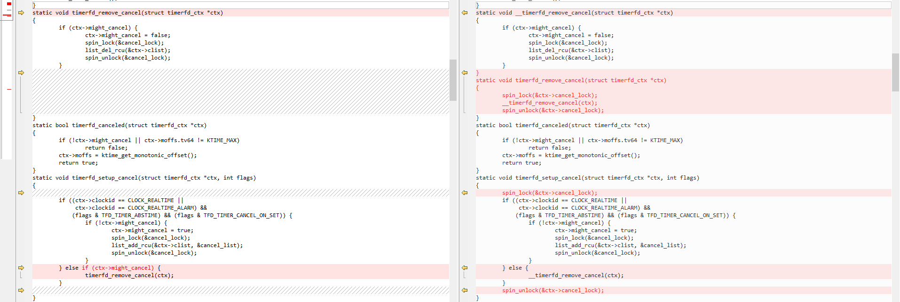
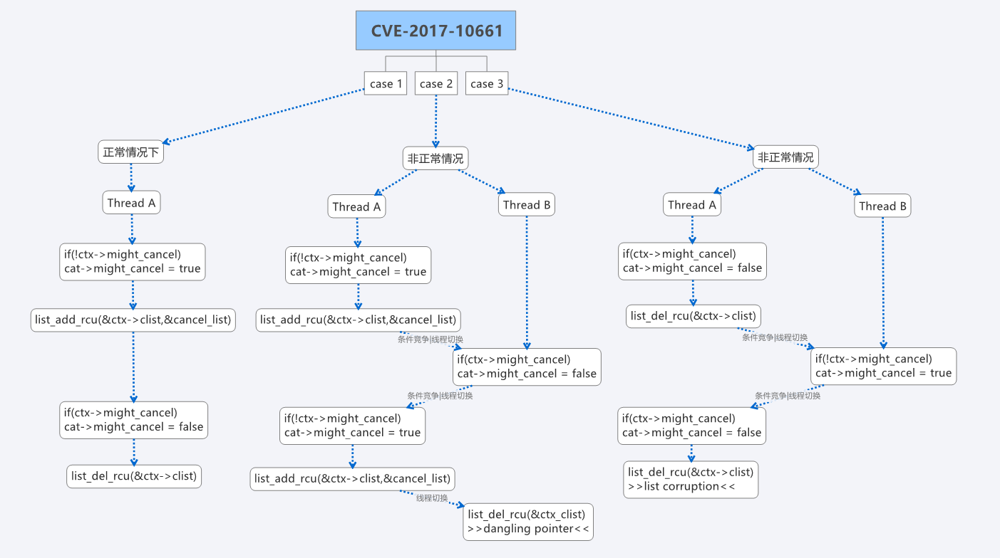

CVE-2018-10661
前言
测试内核
测试时使用的linux内核是MI 5C的内核(3.10.58-03548-gc670b5a)
漏洞描述
在4.10.15之前的linux内核中fs/timerfd.c中存在条件竞争漏洞,允许本地用户通过使用不合适的might_cancel列表的文件描述符操作获取特权或导致拒绝服务(list corruption or use-after-free)
Google修复链接
https://android.googlesource.com/kernel/goldfish/+/95cb006041c2f53060f4decffc7ef27f60aa1d39
存在漏洞的Nexus内核版本
Nexus 6P :Linux version 3.10.73-geac7d674 (android-build@wpef26.hot.corp.google.com) (gcc version 4.9.x-google 20140827 (prerelease) (GCC) ) #1 SMP PREEMPT Tue Dec 13 10:11:12 UTC 2016
Nexus 5X :Linux version 3.10.73-gf97f123 (android-build@wpiu4.hot.corp.google.com) (gcc version 4.9.x-google 20140827 (prerelease) (GCC) ) #1 SMP PREEMPT Mon Nov 2 20:10:58 UTC 2015
漏洞复现
红米4A_崩溃日志
[ 259.810287] Unable to handle kernel paging request at virtual address dead000000000200
[ 259.810331] pgd = ffffffc06b967000
[ 259.810339] [dead000000000200] *pgd=00000000a1fb1003, *pud=00000000a1fb1003, *pmd=0000000000000000
[ 259.810360] Internal error: Oops: 96000044 [#1] PREEMPT SMP
[ 259.810367] Modules linked in: wlan(O)
[ 259.810386] CPU: 2 PID: 6022 Comm: main Tainted: G W O 3.18.24-perf-gdcca0a6 #1
[ 259.810394] Hardware name: Qualcomm Technologies, Inc. MSM8917-PMI8937 QRD SKU5 (DT)
[ 259.810403] task: ffffffc053611900 ti: ffffffc035e48000 task.ti: ffffffc035e48000
[ 259.810418] PC is at do_timerfd_settime+0x124/0x384
[ 259.810427] LR is at do_timerfd_settime+0x118/0x384
[ 259.810435] pc : [<ffffffc0001eb300>] lr : [<ffffffc0001eb2f4>] pstate: 80000145
[ 259.810442] sp : ffffffc035e4bdd0
[ 259.810448] x29: ffffffc035e4bdd0 x28: ffffffc035e48000
[ 259.810461] x27: ffffffc035e4bea8 x26: 0000000000000056
[ 259.810474] x25: ffffffc0111f3300 x24: ffffffc0111f3301
[ 259.810486] x23: 0000000000000001 x22: ffffffc035e4be88
[ 259.810498] x21: 0000000000000000 x20: ffffffc0015ebb90
[ 259.810511] x19: ffffffc0111f3b00 x18: 0000000000000000
[ 259.810523] x17: 0000000000000001 x16: ffffffc0001ebb54
[ 259.810535] x15: 0000007f995ff838 x14: 000000002b63a2d4
[ 259.810547] x13: ffffffffa5cce430 x12: 0000000000000000
[ 259.810559] x11: 00000000041cdaeb x10: 00000000000f4240
[ 259.810571] x9 : 00000000000003e8 x8 : 0000000000000056
[ 259.810583] x7 : 0000000000000000 x6 : 0000010624dd2fb8
[ 259.810594] x5 : 0000000000000000 x4 : ffffffc035e4bda0
[ 259.810606] x3 : 0000000000000000 x2 : 0000000000000000
[ 259.810617] x1 : ffffffc0111f3be0 x0 : dead000000000200
...
[ 259.812135]
[ 259.812143] Process main (pid: 6022, stack limit = 0xffffffc035e48058)
[ 259.812149] Call trace:
[ 259.812160] [<ffffffc0001eb300>] do_timerfd_settime+0x124/0x384
[ 259.812170] [<ffffffc0001ebbe0>] SyS_timerfd_settime+0x8c/0x108
[ 259.812181] Code: 9429cf30 f9407261 f9407660 f9000420 (f9000001)
[ 259.812295] ---[ end trace 10b0993cfa7a40d0 ]---
[ 259.874037] Kernel panic - not syncing: Fatal exception
[ 259.874050] CPU3: stopping
MI 5C崩溃日志
[ 72.679105] Unable to handle kernel paging request at virtual address 00200200
[ 72.679130] pgd = ffffffc03603a000
[ 72.679136] [00200200] *pgd=0000000054a8a003, *pmd=0000000000000000
[ 72.679152] Internal error: Oops: 96000046 [#1] PREEMPT SMP
[ 72.679159] Modules linked in:
[ 72.679172] CPU: 5 PID: 3907 Comm: main Not tainted 3.10.58-03548-gc670b5a #1
[ 72.679179] task: ffffffc006d18b00 ti: ffffffc030464000 task.ti: ffffffc030464000
[ 72.679198] PC is at do_timerfd_settime+0x13c/0x384
[ 72.679204] LR is at do_timerfd_settime+0x124/0x384
[ 72.679210] pc : [<ffffffc0001fe99c>] lr : [<ffffffc0001fe984>] pstate: 80000145
[ 72.679215] sp : ffffffc030467dc0
[ 72.679220] x29: ffffffc030467dc0 x28: ffffffc030464000
[ 72.679230] x27: ffffffc000e2e000 x26: ffffffc030467eb0
[ 72.679239] x25: 0000000000000001 x24: ffffffc04ab4c200
[ 72.679249] x23: 0000000000000000 x22: 0000000000000001
[ 72.679258] x21: ffffffc030467e90 x20: ffffffc0010fa350
[ 72.679268] x19: ffffffc04ab4d700 x18: 0000000000000000
[ 72.679277] x17: 0000000000000001 x16: ffffffc0001ff204
[ 72.679286] x15: 00000073aacff838 x14: 00000000322852a5
[ 72.679297] x13: ffffffffa5cce228 x12: 0000000000000000
[ 72.679306] x11: 000000002d2614c5 x10: 00000000000f4240
[ 72.679315] x9 : 00000000000003e8 x8 : 0000000000000056
[ 72.679325] x7 : 0000000000000000 x6 : 0000010624dd2fb8
[ 72.679334] x5 : 0000000000000000 x4 : 0000000000000003
[ 72.679344] x3 : ffffffc04ab4d7c0 x2 : 0000000000200200
[ 72.679353] x1 : 0000000000200200 x0 : ffffffc0010fa350
...
[ 72.679516] Call trace:
[ 72.679524] [<ffffffc0001fe99c>] do_timerfd_settime+0x13c/0x384
[ 72.679532] [<ffffffc0001ff284>] SyS_timerfd_settime+0x80/0x100
[ 72.679539] Code: f9406662 f2a00401 aa1403e0 f9000462 (f9000043)
[ 72.679588] ---[ end trace 4bf3b843607c1053 ]---
[ 72.704005] Kernel panic - not syncing: Fatal exception
[ 72.704028] CPU4: stopping
我们通过分析不同手机的内核崩溃日志可以看到是存在两种不同崩溃的，这取决于当前内核的LIST_POISON2宏的值（0xdead000000200200 或 0x00200200）当LIST_POISON2等于0xdead000000200200因为无法使用mmap对其进行映射，导致触发漏洞时会稳定崩溃在对该地址进行写入的位置，没想到如何避免该崩溃，而当LIST_POISON2等与0x00200200时我们可以通过mmap函数在exploit程序中对其进行映射，当触发漏洞的时候也就不会造成内核崩溃，也就可以进行我们下一步的利用操作，以下的操作都是基于LIST_POISON2等于0x00200200
漏洞成因
首先看下官方给的补丁
左边属于打补丁之前的代码，右边属于打补丁之后的代码
可以看到主要是新添加了一个__timerfd_remove_cancel函数，该函数是在对timerfd_remove_cancel函数做调用的时候进行锁操作，
在timerfd_setup_cancel函数中也加了锁操作，所以我们着重分析没打补丁之前的timerfd_setup_canceled函数和timerfd_remove_cancel函数
|
|
|
|
|
|
首先来熟悉下timerfd_setup_cancel函数的逻辑,该函数存在两条分支,而这两条分支又都是通过判断ctx->might_cancel变量的值来控制应该执行哪条分支
1.ctx->might_cancel == false, call -> list_add_rcu函数
2.ctx->might_cancel == true, call -> timerfd_remove_cancel函数
第一次调用timerfd_setup_cancel函数时,当ctx->might_cancel等于false的时候,内核会走分支1,然后把ctx->might_cancel设置为true,然后调用list_add_rcu函数对cancel_list进行添加操作。
再次调用timerfd_setup_cancel函数的时候,因为第一次已经把ctx->might_cancel设置为true了,所以会进入分支2执行,然后调用timerfd_remove_cancel函数,把ctx->might_cancel设置为false,并且调用list_del_rcu函数对cancel_list进行删除操作。
弄清楚该函数逻辑后再回头看看补丁,也就明白为什么官方要增加两个锁操作了,猜测是因为这里的ctx->might_cancel在没打补丁之前是允许被别的进程修改的,一加一减本来是没什么问题,如果是单线程对timerfd_setup_cancel函数做调用的话,但是如果是两个线程或多个线程同时调用timerfd_setup_cancel函数那么会怎么样呢?可能就会出现线程同步问题,存在下面3种情况。

为什么说两个不同的线程修改的会是同一个ctx结构体呢?
那么我们可以先来看看ctx这个变量是怎么来的,在系统调用timerfd_create处可以看到ctx是在我们创建计时器对象时申请的,ctx在timerfd_create函数中被创建后,后续函数中的ctx都是以结构体指针(struct timerfd_ctx *)的方式对最开始创建的ctx进行访问,也就是说每个函数中操作的ctx->might_cancel其实也都是同一个变量,这也证明我们之前的猜测是没毛病的,这样的话我们完全可以创建多个线程与主线程做竞争改变ctx->might_cancel变量的值。
该漏洞属于多线程并行造成的条件竞争问题,从崩溃信息来看,我们触发的应该是第3种情况(对cancel_list做两次删除操作)。
- 第一次删除entry->prev被设置为了LIST_POISON2(0x00200200),因为属于正常删除,所以此时系统并没有崩溃,
- 第二次删除在__list_del_entry中取entry_prev指向地址(0x00200200)的值，因为0x00200200该地址未映射,导致访问异常，系统崩溃
因为两次删除的是同一个结构体,而第一次把结构体的entry_prev设置为了0x00200200,当第二次进行取值的时候就出现了访问异常。
漏洞利用
ctx->clist增删调用链:用户层的系统调用timerfd_settime()
timerfd_settime() ---> 增加链
\__do_timerfd_settime()
\__timerfd_setup_cancel()
\__list_add_rcu()
timerfd_settime() ---> 删除链
\__do_timerfd_settime()
\__timerfd_setup_cancel()
\__timerfd_remove_cancel()
\__list_del_rcu()
利用思路
我们可以把条件竞争漏洞进阶为Use_After_Free漏洞,也就是前面提到的3种情况中的第2种情况,该情况会对cancel_list添加两次,那时的ctx->prev == ctx->next,然后释放掉ctx->prev指向的内存—也就是节点本身,但是ctx->next却对该内存还存在引用,这就给了我们后面的利用思路。
总体可分为6步:
- 第一步:调用timerfd_create()函数创建一个timerfd和分配ctx结构体内存
- 第二步:创建多个线程同时调用timerfd_settime函数,争取触发第2种竞争问题
- 第三步:调用close函数触发释放结构体内存
kfree_rcu(ctx) --> timerfd_release --> timerfd_remove_cancel(ctx) - 第四步:通过Heap spray技术对ctx结构体进行喷射,填充释放的ctx结构体
- 第五步:通过调用settimeofday函数,触发释放后重引用漏洞,从而控制”PC”
- 第六步:使用gadget对address_limit进行修改,并绕过PXN保护机制
|
|
首先通过竞争条件对cancel_list链表添加了两次同一地址的结构体,第一次释放结构体时会把ctx->prev指向的内存释放掉,却并没有操作ctx->next变量的值,因为ctx->next == ctx->prev,ctx->next还指向自身,所以该ctx内存虽然被释放,但还存在cancel_list链表中,紧接着我们通过喷射，填充之前释放的结构体内存。
然后在用户层触发重引用(settimerofday()),settimerofday底层实现函数timerfd_clock_was_set会对cancel_list链表进行遍历,并且取遍历出的ctx结构体成员wqh的地址作为wake_up_locked()函数的参数传入。
再来看看wake_up_locked函数内部实现。
可以看到在该函数内部存在一个函数指针(curr->func)的间接调用,而这个func属于curr的成员,curr又是通过使用list_for_each_entry_safe宏把q->task_list的next赋值过来的,q又是wake_up_locked函数的参数1,也就是遍历到的ctx成员wqh。
因为cancel_list链表中还存在之前被释放的ctx结构体,所以这里遍历到的ctx结构体也就是我们喷射的ctx结构体,这样看来所有的一切我们似乎都可以控制,只要通过内核源码,精心构造喷射的ctx结构体,绕过内核的一些检测控制内核的执行流还是很容易的。不过构造数据时需要注意一下list_for_each_entry_safe这个宏,不然可能会进入死循环,导致内核崩溃。
list_for_each_entry_safe宏
list_for_each_entry_safe(curr, next, &q->task_list, task_list)
#define list_for_each_entry_safe(pos, n, head, member) \
for (pos = list_entry((head)->next, typeof(*pos), member), \ /* curr赋值*/
n = list_entry(pos->member.next, typeof(*pos), member); \ /* 初始化pos */
&pos->member != (head); \ /* 结束条件 */
pos = n, n = list_entry(n->member.next, typeof(*n), member)) /* 改变条件 */
喷射结构体信息
|
|
32位
(gdb) p &((struct timerfd_ctx*)0)->might_cancel
$1 = (bool *) 0x90
64位
(gdb) p &((struct timerfd_ctx*)0)->might_cancel
$1 = (bool *) 0xf0
不同的内核,编译出来的大小也会不一样
触发链
在内核中找到了几条触发链:
比较无语的就是这些系统调用函数都会判断当前进程是否有CAP_SYS_TIME权限,如果有该权限才会执行后面的函数,不然就会中途退出
- sys_stime() -> do_settimeofday() -> clock_was_set() -> timerfd_clock_was_set()
- adjtimex() -> do_adjtimex() -> clock_was_set() -> timerfd_clock_was_set()
- settimeofday() -> do_sys_settimeofday -> do_settimeofday() -> clock_was_set() -> timerfd_clock_was_set()
看了下android中的系统进程(SystemServer)是存在该权限的,所以我也可以结合别的AOSP漏洞,先拿到SystemServer进程的执行权限,然后再利用该内核漏洞进行提权,不过感觉好鸡肋啊￣□￣｜｜
Author: Let_go
Link: http://github.com/2017/12/29/CVE-2017-10661/
Copyright: All articles in this blog are licensed under CC BY-NC-SA 3.0 unless stating additionally.